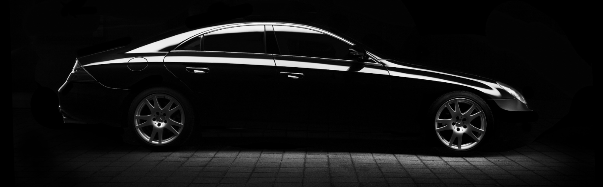
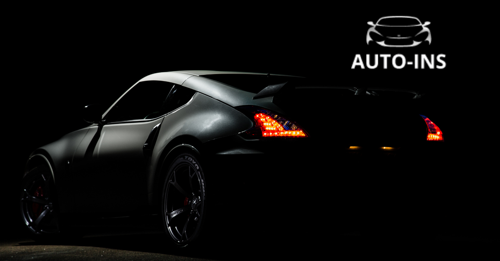

Реєстрація транспортного засобу: чи дорівнює довіреність купівлі-продажу

У період повномасштабного вторгнення, коли тисячі громадян захищають країну в лавах Збройних Сил або перебувають за кордоном чи в інших регіонах, делегування повноважень на оформлення реєстраційних дій із транспортними засобами стало ще більш поширеною практикою.
Сервісні центри МВС щодня приймають громадян, які звертаються з довіреностями для здійснення реєстраційних дій – реєстрації, перереєстрації авто, зняття з обліку, вибракування або збереження номерних знаків тощо.
Разом з цим адміністратори сервісних центрів постійно чують від клієнтів типові фрази:
-
«Я купив авто по довіреності, прийшов зареєструвати»
-
«У мене генеральне доручення на все»
-
«На мене довіреність, хочу перереєструвати на себе авто»
У зв’язку з цим сервісні центри МВС нагадують, що таке довіреність і які вона має повноваження.
auto ins, автоинс, аутоинс, ауто инс, autoins, автоинс, авто инс, автоінс, авто інс, ауто інс,
Що таке довіреність?
Довіреність – це документ, яким власник транспортного засобу (довіритель) надає іншій особі (повіреному) право здійснювати певні дії від його імені. Це може бути керування автомобілем, право представляти інтереси у держустановах тощо.
Однак довіреність — це лише делегування певних повноважень без зміни власника.
Право власності передається лише за договором купівлі-продажу, дарування або міни з подальшою реєстрацією нового власника у сервісному центрі МВС.
💡 Корисна порада: якщо ви вже стали власником авто, не забудьте оформити автоцивілку — обов’язковий страховий поліс для всіх водіїв. Через онлайн-сервіс AUTO-INS це можна зробити за кілька хвилин, без паперових черг і прихованих доплат.
Законодавче регулювання
Відповідно до ст. 244 Цивільного кодексу України, довіреність є формою представництва і лише дозволяє діяти від імені іншої особи.
Право власності на транспортний засіб може бути передане лише шляхом укладення договору купівлі-продажу, обміну, дарування тощо — згідно зі ст. 334 Цивільного кодексу України.
Що варто знати при оформленні довіреності
-
Власником авто залишається особа, що видала довіреність.
-
У будь-який момент довіреність може бути скасована власником.
-
У разі смерті власника або втрати ним дієздатності довіреність втрачає чинність.
-
Якщо в довіреності зазначена лише одна особа, вона не може одразу переоформити авто на себе.
(У такому випадку потрібно залучати іншу особу, на яку тимчасово зареєструють авто, а вже потім здійснюється перереєстрація на того, хто мав довіреність.)
Як правильно оформити купівлю транспортного засобу
Щоб стати законним власником транспортного засобу, необхідно звернутися до сервісного центру МВС, де можна:
-
укласти договір купівлі-продажу;
-
провести перереєстрацію транспортного засобу на нового власника;
-
отримати нове свідоцтво про реєстрацію транспортного засобу.
Це передбачено Порядком державної реєстрації (перереєстрації) транспортних засобів, затвердженим постановою КМУ №1388.
Пам’ятайте: «генеральна довіреність» – це міф. Документа з такою назвою не існує. Вона не є договором купівлі-продажу і не дає права власності на автомобіль.
Для уникнення ризиків радимо продавцю та покупцю звертатися до сервісних центрів МВС і оформлювати всі реєстраційні дії відповідно до чинного законодавства.
Консультацію щодо послуг сервісних центрів МВС можна отримати за телефоном (044) 290-19-88 або на сторінках Головного сервісного центру МВС у Facebook та Instagram.
